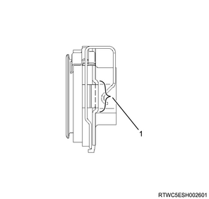

Transmission case reassembly (MUA)
1. Rear oil seal installation
1. Apply the oil to the rear oil seal.
Note
- Apply the recommended lubricating oil to the outer circumference of the new oil seal.
2. Apply the grease to the oil seal.
Note
- Apply BESCO L2 GREASE or equivalent to the lip of the oil seal.
3. Install rear oil seal to rear cover using special tool.
Note
- Use a new rear oil seal.
- The following applies to 2WD.
- Use the oil seal installer.
SST: 5-8522-0050-0 - rear cover oil seal installer
Note
- The following applies to 4WD.
- Use the oil seal installer and grip.
SST: 5-8840-2797-0 - oil seal installer

SST: 5-8840-0007-0 - grip
- Oil seal installer
- Grip
- 2.4 - 3.0 mm （0.094 - 0.118 in）
2. Intermediate plate installation
1. Install the intermediate plate to the transmission case.
Note
- Apply ThreeBond 1215 or equivalent to the aligning surface of the transmission case and intermediate plate.
- Install the intermediate plate together with the gear assembly as a unit.
- Pull the top gear shaft in such a way that the ball bearing snap ring groove protrudes from the transmission front case cover installation surface.
Caution
- Do not apply any abrupt impact or pressure to the main shaft.
3. Rear cover installation
1. Install the rear cover to the intermediate plate.
Note
- The following applies to 2WD, with ABS.
2. Install the O-ring to the cap.
3. Install the cap to the rear cover.
Tightening torque： 15 N・m { 1.5 kgf・m / 11 lb・ft }
- Cap
- O-ring
Note
- Apply ThreeBond 1215 or equivalent to the aligning surface of the intermediate plate and rear cover.
- Protect the shaft spline with a tape so that the lip section of the rear oil seal is not damaged.
- Clean the transmission case bolt hole and the threaded portion of the bolt.
- Dry the transmission case bolt hole and the threaded surface of the bolt.
Tightening torque： 37 N・m { 3.8 kgf・m / 27 lb・ft }

- Rear cover, 15 mm {0.59 in}
- Intermediate plate, 20 mm {0.79 in}
- Transmission case, 20 mm {0.79 in}
4. Control box installation
1. Install the control box to the transmission case.
Note
- Install the control box and a new gasket.
- After installing the harness clip and bracket, tighten the four new bolts to the specified torque.
Tightening torque： 20 N・m { 2.0 kgf・m / 15 lb・ft }
5. Speedometer driven gear installation
Note
- The following applies to 2WD, without ABS.
1. Install the O-ring to the speedometer bushing.
2. Install the speedometer driven gear to the speedometer bushing.
6. Retainer plate installation
Note
- The following applies to 2WD, without ABS.
1. Install the speedometer driven gear to the rear cover.
2. Install the retainer plate to the rear cover.
Tightening torque： 15 N・m { 1.5 kgf・m / 11 lb・ft }

- Retainer plate
- Speedometer bushing
- O-ring
7. Vehicle speed sensor installation
Note
- The following applies to 2WD, without ABS.
1. Install the vehicle speed sensor to the speedometer bushing.
Tightening torque： 25 N・m { 2.5 kgf・m / 18 lb・ft }
8. Top gear bearing snap ring installation
1. Install top gear bearing snap ring to the top gear shaft using a snap ring pliers.
Note
- Confirm that the snap ring is securely installed.
9. Counter front bearing snap ring installation
1. Install the counter front bearing snap ring to the counter shaft using a snap ring pliers.
Note
- Confirm that the snap ring is securely installed.
10. Front cover installation
1. Replace the front oil seal with a new one.
Note
- Apply the recommended lubricating oil to the outer circumference of the new oil seal.
- Apply BESCO L-2 grease or equivalent to the lip section of the oil seal.
2. Install the front oil seal to the front cover using special tool.
Note
- Firmly fit the front oil seal using the oil seal installer.
SST: 5-8840-0026-0 - oil seal installer
- Oil seal installer
3. Install the front cover to the transmission case.
Note
- Install a new gasket and the front cover.
Caution
- Be careful not to damage the oil seal.
Note
- Clean the transmission case bolt hole and dry it.
- Tighten the six new front cover bolts to the specified torque.
Tightening torque： 25 N・m { 2.5 kgf・m / 18 lb・ft }
11. Shift fork installation
1. Apply the grease to the shift fork.
Note
- Apply EXXON MOBILE RONEX MP grease or equivalent to the position shown in the diagram.
- Back
- Grease application

- Grease application
2. Install the shift fork to the transmission case.
12. Release bearing installation
1. Apply the grease to the release bearing.
Note
- Apply EXXON MOBILE RONEX MP grease or equivalent to the contact surface with the shift folk.
Caution
- Do not apply grease to the inner surface of the sleeve.

- Grease application
2. Install the release bearing to the front cover.
Note
- After installation, connect it to the shift fork.